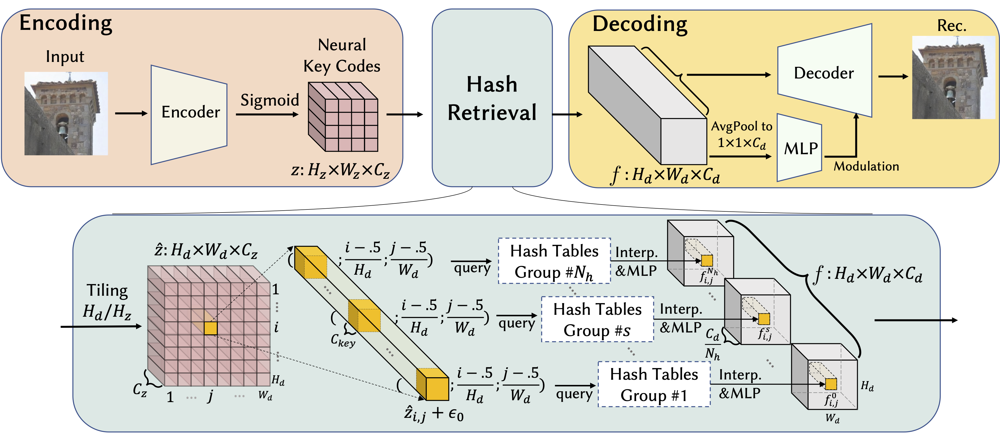
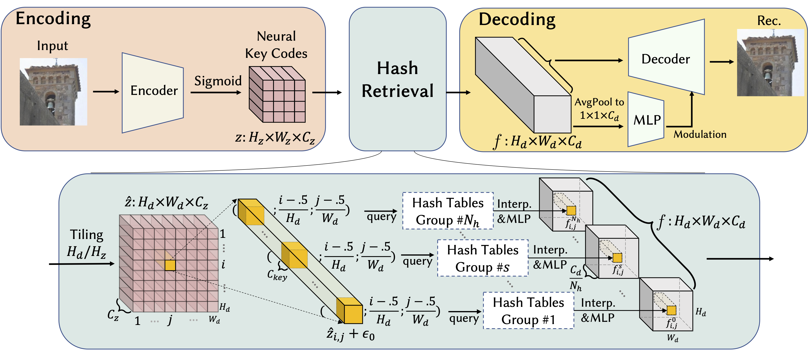

Pipeline
Overall pipeline of our method in three parts: Encoding, Hash Retrieval and Decoding.
Overall pipeline of our method in three parts: Encoding, Hash Retrieval and Decoding.
Our largest model (code size 16 × 16 × 16) has only 10M more parameters (≈ 24% increase) than those of the corresponding VQGAN and RQ-VAE models. However, our model outperforms VQGAN and RQ-VAE across all metrics, showing 55% and 41% improvements in LPIPS, respectively. In terms of computational costs, our method requires ≈ 50% fewer GFlops due to its smaller decoder and the efficiency gained from utilizing the hash tables.
Reconstruction metrics on the validation splits of FFHQ and LSUN-Church dataset.
Trainable parameters and computational load of decoders. An * indicates total number of parameters in hash tables and ‡ refers to total computational cost of decoding and feature retrieval from hash tables.
The precision of our generated images is significantly higher than others, indicating a substantial reduction of low-quality samples in our results, while our recall is almost the same as StyleGAN2. Our method also gets competitive results on FID, CLIP-FID and Inception Scores.
Quantitative results of generation on FFHQ dataset. * denotes the results calculated on publicly released checkpoint by LDM author on Github.
Quantitative results of generation on LSUN-Church dataset.
Although our method has much higher precision scores than previous methods, we show the nearest neighbour search by LPIPS to demonstrate that our generated samples are unique and not mere retrievals from the training dataset. In the following images, the leftmost images in each row are generated images from our method and the rest images in each row are the nearest neighbour search results.


@article{yang2024gala,
title={GALA: Geometry-Aware Local Adaptive Grids for Detailed 3D Generation},
author={Yang, Dingdong and Wang, Yizhi and Schindler, Konrad and Amiri, Ali Mahdavi and Zhang, Hao},
journal={arXiv preprint arXiv:2410.10037},
year={2024}
}